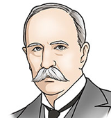
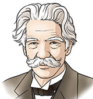
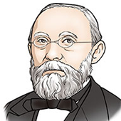
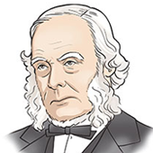
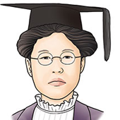

칼리지 아주대학교 의과대학의 모든 학생들은 6개의 칼리지 소그룹에 속해 있습니다.
칼리지 제도는 학년 내 6개의 소그룹을 지어 연결고리를 만들어 동급생간 교류, 발전에 중점을 둔 제도로 칼리지 담당교수의 지도 아래 전인적 교육이 이루어지고 있습니다.
아주의대만의 특색인 6 칼리지를 소개합니다.
-
인성의 중요성을 일깨우고 존경받는 의사로서의 길을 제시하다.
장기려 칼리지
“사랑의 동기 아니면 말을 삼가라. 옳은 것은 옳다 하고 아닌 것은 아니다 하라.
문제의 책임은 자신이 져야 한다.” 장기려 선생님의 ‘聖山三訓(성산삼훈)’입니다. 소명의식과 책임감, 그리고 사랑은 참된 의사가 가져야 할 덕목이 아닐까합니다.
장기려 칼리지 멤버들은 한 평생을 사랑과 봉사 속에서 살아가셨던
장기려 선생님을 보며 어떤 의사가 좋은 의사인지 고민하면서 학업에 임하고
있습니다.
고민을 함께 공유할 수 있는 학우들, 그리고 도움을 주시는 교수님들과 함께
공동체를 이루고 있습니다. 실력과 더불어 올바른 가치를 추구하는 의사가
되기 위하여 오늘도 자신에게 질문을 던지는, 장기려 칼리지, 화이팅! -
인화의 중요성을 일깨우고 사회성 있는 의사로서의 길을 제시하다.
오슬러 칼리지
붉은색을 상징으로 하는 오슬러 칼리지는 Leadership을 주요한 덕목으로 여깁니다. 붉은색 하면 떠오르 는 자극적· 정열· 애정· 위험· 혁명· 피· 더위· 열· 일출· 노을 같은 많은 단어는 우리 오슬러 칼리지를 수식 할 수 있는 단어 중 하나입니다.
그 중 “정열, Passion” 은 오슬러 칼리지가 추구하는 바를 제일 잘 설명할 수 있습니다.
가슴 속에서 맹렬하게 일어나는 적극적인 감정인 ‘정열’은 리더십의 핵심이자, 의학도로서 오슬러 칼리지 학우들이 학업, 학교생활 등에 있어서 나아갈 방향을
제시해 주는 단어입니다. 모든 오슬러 칼리지 학우들이 의과대학시절동안 본인의 정열을 쏟을 목표를 세우고 정진해 나가길 바라며, 균형 잡힌 육체적, 정신적 활동을 통해 리더십을 갖춘 독립적인 의사가 될 수 있도록 학생, 교수가 모두 정열적으로 활동을 해봅시다! -
지속적인 자기개발의 중요성을 일깨우고 조화로운 의사의 길을 제시하다
슈바이쳐 칼리지
알베르트 슈바이쳐(Albert Schweitzer)를 role model로 삼는
슈바이쳐 칼리지입니다.
슈바이쳐 박사는 “생명에 대한 경외”라는 그의 고유한 철학으로 아프리카에 병원을 세우셨고, 1952년에는 노벨 평화상을 수상하였습니다.
다양한 분야에서의 위대한 업적만큼이나 훌륭했던 그의 인품은 사회가 요구하는
소명 의식과 책임감, 품위와 윤리 도덕관을 갖춘 의사상의 본보기가 되며,
우리 아주대학교 의과대학의 핵심 모토인 Professionalism에 부합한 인재상입니다.
우리 슈바이쳐 칼리지 일원들은 슈바이쳐 박사처럼 다양한 분야에서의 재능을
뽐낼 뿐만 아니라 동료 의사들이 바라던, 많은 환자들이 찾아 헤매던,
우리 사회가 필요로 하는 참된 의사가 되도 록 매일 각자의 자리에서
최선을 다하고 있습니다. 세상을 향해 뜨거운 가슴을 품은 슈바이쳐 칼리지, 화이팅! -
학문의 중요성을 일깨우고 성실한 학자로서의 길을 제시하다.
피르코 칼리지
푸른색을 상징하는 피르코 칼리지입니다.
피르코는 독일 출신의 의사로 1858년 Cellular pathology를 저술하였습니다.
'현대 병리학의 아버지'라 불리울 만큼 의학 발전에 지대한 공을 세운 인물입니다.
또한 그는 인류학, 의사학, 정치 방면으로도 유명할 만큼
출중한 학문적 소양으로 사회에 공헌하였습니다.
우리 아주대학교 의과대학의 피르코 칼리지는 '智'를 모토로 의학도로서의 탁월함을 추구하고 있습니다.
학문의 중요성을 깨닫고 다양한 분야의 전문가로 성장하여
사회에 도움이 되고자 합니다.
언젠가 피르코가 교수로 재직했던 베를린 의과대학을 견학할 그 날을 위하여! 피르코 칼리지, 화이팅! -
끈기의 중요성을 일깨우고 선구자로서의 길을 제시하다.
리스터 칼리지
조지프 리스터 남작(Joseph Lister)은
수술 전 수술도구를 살균하고 상처를 소독하는 과정을 도입하여
현대 외과 수술에 혁명을 가져다주었고
이러한 업적을 인정받아 오늘날 "Father of modern surgery"라 불리고 있습니다.
비록 무균수술법을 막 고안하였을 당시에는 별다른 주목을 받지 못하였지만
꾸준히 자신의 방식을 고수하여
결국 무균수술법을 모든 수술의 표준으로 만들고 영국왕립학회장까지 오른
조지프 리스터처럼 리스터 칼리지의 구성원들도
빛날 미래를 위해 오늘도 끈기 있게 여러 어려움을 헤쳐 나가고 있습니다.
고귀함을 뜻하는 보라색처럼 고귀하고 숭고한 정신을 가진 리스터 칼리지, 화이팅! -
학문의 중요성을 일깨우고 성실한 학자로서의 길을 제시하다.
박에스더 칼리지
기존의 슈바이처, 오슬러, 장기려, 피르코 칼리지에 이어
새롭게 탄생한 박에스더 칼리지입니다.
박에스더 칼리지는 인간 존중과 사랑을
가장 주요한 덕목으로 생각합니다.
1900년대 초의 열악한 환경 속에서도 환자에 대한 사랑을 잃지 않고
맹학교 및 간호학교 설립에 앞장선 박에스더 여사님은 사회적 편견과 여성의 차별대우에 맞서 싸우며 자신의 의료 생활을 이어 나갔습니다.
환자가 아무리 멀리 있어도 당나귀를 타고 가서 치료를 했을 정도로 환자에 대한
헌신과 사랑이 넘쳤던 박에스더 여사님은 저희 칼리지가 가장 존경하는
롤모델입니다.
의사와 환자를 이어주는 건 작은 관심과 배려인 것처럼 박에스더
칼리지 의과대학 학생 여러분 모두 가슴 속에 따뜻한 열정과 사랑을 품길 바라며 박에스더 칼리지, 화이팅!